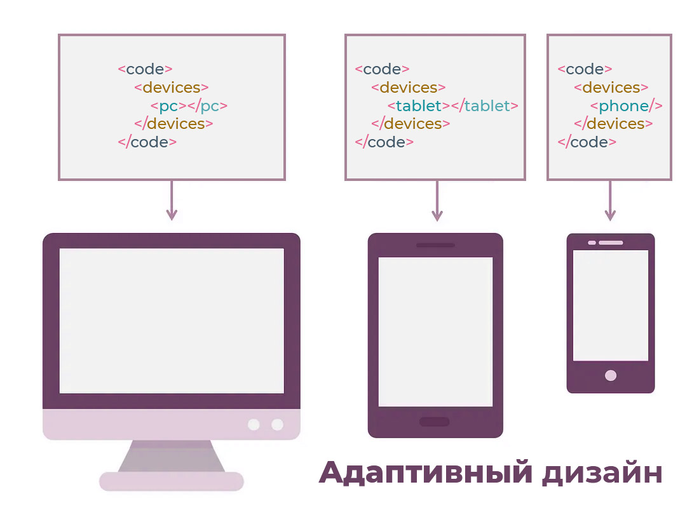
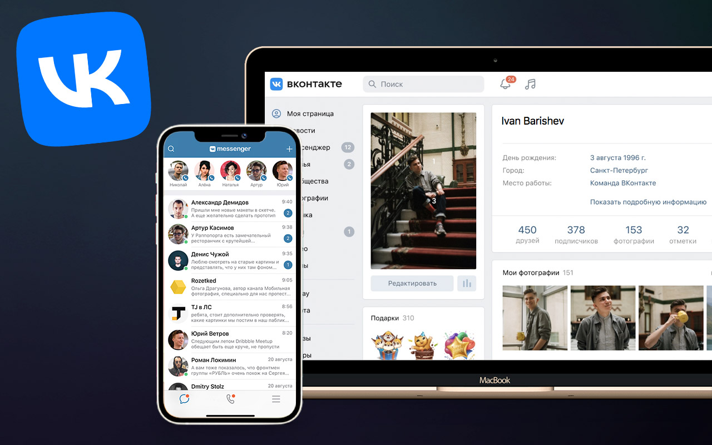

Что такое адаптивный дизайн?
Адаптивный дизайн работает так: вы создаете не один универсальный сайт, а несколько отдельных макетов под разные экраны. Когда человек заходит на сайт, сервер сразу понимает, с какого устройства он зашел (телефон, планшет или компьютер), и показывает подходящий вариант дизайна.

Что такое адаптивный дизайн (adaptive)
Адаптивный дизайн – это подход, при котором для каждого диапазона размеров экрана создается отдельный макет. Пользователю показывается не «растянутый» универсальный шаблон, а заранее подготовленная оптимизированная версия.
Адаптивный дизайн часто следует принципу progressive enhancement – «постепенного улучшения».
Сначала делается базовая версия интерфейса. Она простая и работает даже на слабых устройствах и при медленном интернете. А потом, если устройство позволяет, сайт постепенно «прокачивается»: добавляются красивые стили, сложные элементы и картинки в высоком разрешении.
Прогрессивное улучшение обычно связывают с адаптивным дизайном, но на самом деле этот подход универсален. Его часто используют и в отзывчивых сайтах, которые делают по принципу mobile-first: сначала простой мобильный макет, а потом он дополняется по мере увеличения экрана.
Плюсы и минусы адаптивного дизайна
Чем хорош адаптивный дизайн:
- Полный контроль над дизайном. Вы заранее решаете, как сайт будет выглядеть на каждом типе устройств, и настраиваете всё до мелочей.
- Точная подгонка под экран. Можно настроить ширину и расположение элементов отдельно для компьютеров, планшетов и телефонов.
- Удобство для пользователя. Контент отображается идеально, и с ним легко взаимодействовать на любом устройстве.
- Быстрая загрузка. Сервер отдает только нужные файлы, поэтому сайт грузится быстрее на тех устройствах, под которые сделан.
- Выручает сложные сайты. Если на сайте много интерактива и медиа, адаптивная версия облегчает их загрузку на телефонах.
А теперь о минусах:
- Дорого и трудоемко. Нужно нарисовать, собрать и постоянно поддерживать несколько версий сайта.
- Жесткая структура. Макеты заданы заранее, поэтому новые или необычные экраны сайт может не поддержать.
- Не всем подходит. Пользователи с нестандартными устройствами рискуют получить не самый удобный вариант.
- Зависимость от сервера. Всё держится на том, правильно ли сервер определит тип устройства.
- Риск ошибки. Если устройство распознано неверно, человек увидит неподходящую верстку — а это раздражает.
Примеры адаптивного дизайна
Простой пример ВК
В цифровом мире есть яркий пример компании, которая делает ставку на адаптивный дизайн, — это ВКонтакте.
Благодаря адаптивному дизайну VK заботится о том, чтобы пользователю было удобно в любом случае: заходит он в соцсеть с настольного компьютера или открывает мобильное приложение — интерфейс подстраивается под экран. В итоге человек получает удобное управление и хорошую скорость работы.

Видео
ююю